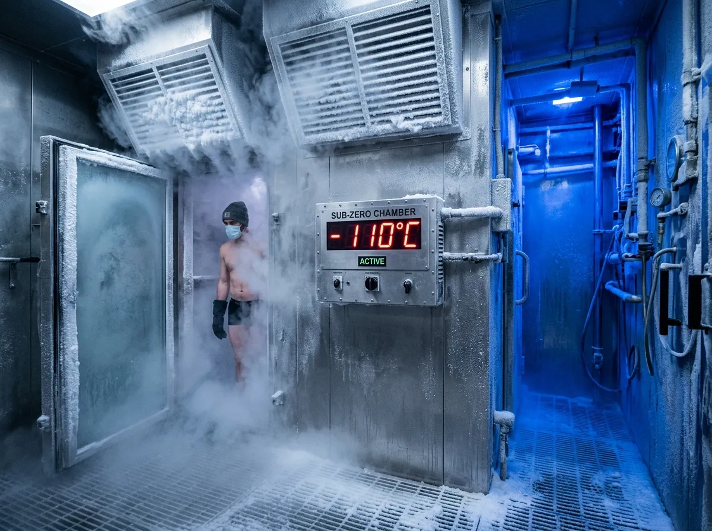

TENDONFORGE
TENDONFORGE
INDUSTRIAL ATHLETES REQUIRE SPORTS-MEDICINE HARDWARE.
The mechanical science of tendon repair applied to heavy-industry workforces.
Occupational biomechanics traditionally ignores the realities of heavy industrial labor. While professional athletes receive immediate on-site remobilization after exerting extreme mechanical force, civil engineering and foundry operators are relegated to passive resting time or delayed outpatient physiotherapy. TendonForge brings elite sports-medicine intervention—high-pressure mechanotransduction and extreme thermal shock—directly to the point of injury, ensuring human structural connective tissue is maintained with the same rigor as the mechanical plant equipment.

01 // TENDON PATHOLOGY IN HEAVY INDUSTRY
When heavy operators swing a sledgehammer or operate high-vibration rotary drills, the transverse shear stress across the carpal and patellar tendon sheaths exceeds the ultimate tensile strength of individual Type-I collagen fibrils. This mechanical overload causes microscopic ruptures within the tendon matrix. If these micro-tears are merely rested overnight, the body's inflammatory response hastily patches the damage with disorganized, inelastic scar tissue (Type-III collagen). Over months of continued industrial labor, this haphazard scarring thickens the tendon sheath, restricts the range of motion, and inevitably leads to chronic lateral epicondylitis or severe patellar tendinopathy.
To reverse this pathology, the disorganized scar tissue must be forcibly remodeled while it is still pliable. This is the core operating principle of the TendonForge platform. By applying immense, targeted mechanical pressure via our six-bar pulsatile hydro-jets, we induce controlled mechanotransduction. The percussive force physically aligns the newly forming collagen fibrils along the axis of tension, restoring the tendon's natural elasticity. When immediately followed by extreme thermal shock in the -110°C cryo-chamber, the resulting intense vasoconstriction flushes out the inflammatory cytokines that drive chronic pain, allowing the worker to return to the next shift with a mechanically restored, fully functional musculoskeletal system.
02 // CRYO-HYDRO KINETICS COMPARATIVE MATRIX
| Intervention Methodology | Mechanism of Action | Fluid Exchange & Tissue Penetration | Efficacy for Industrial Load |
|---|---|---|---|
| Standard Outpatient Physiotherapy | Manual manipulation and passive stretching exercises performed 48-72 hours post-shift. | Superficial blood flow increase. Insufficient depth to remodel calcified deeper tendon structures. | Poor. Too delayed to prevent initial inflammatory scarring. High off-site transit downtime. |
| On-Site Static Ice Baths | Total body submersion in 4°C static water for ten minutes. | Generalized thermal extraction. Lacks targeted mechanical pressure to break down fibrin cross-links. | Moderate. Reduces acute swelling but fails to address collagen misalignment or shear stress. |
| TendonForge Automated Cryo-Hydro | Immediate 6-bar pulsatile hydro-massage followed by rapid -110°C electric cryo-cycling. | Deep percussive penetration forces active fluid exchange, clearing cytokines and physically realigning tissue. | Superior. Aggressive, immediate intervention directly counteracts heavy mechanical loading micro-trauma. |
03 // THE 4-STAGE DAILY SHIFT PROTOCOL
Pre-Shift Thermal Priming
Prior to entering the active heavy-lift zone, operators complete a three-minute targeted low-pressure (2-bar) warm hydro-cycle. This increases local tissue temperature and arterial vasodilation, reducing initial tendon stiffness and preparing the connective tissue for high mechanical loads without prematurely fatiguing the muscle belly.
Mid-Shift De-Tensioning
During the mandated operational break, workers engage the pneumatic ankle and lumbar traction rigs for five minutes. This critical intervention decompresses the spinal column and gently distracts the major joints, relieving accumulated transverse shear stress before it can trigger an acute inflammatory response in the second half of the shift.
Post-Shift Cryo-Shock
Immediately upon clocking out, operators enter the -110°C electric cryo-valve for ninety seconds. The extreme thermal differential triggers rapid, systemic vasoconstriction. This forces stagnant blood and heavy concentrations of inflammatory cytokines out of the exhausted peripheral limb tissues and into the central circulatory system for filtration.
Micro-Trauma Prevention
The sequence concludes with a high-pressure (6-bar) pulsatile hydro-massage directed precisely at the forearms and patellar tendons. This mechanical force physically disrupts early-stage fibrin cross-links, preventing micro-tears from coalescing into chronic scar tissue overnight, thus safeguarding the operator's structural integrity for the following day.
04 // CLINICAL & ENGINEERING FAQ
What are the specific treatment protocols for chronic lateral epicondylitis in ironworkers?
Ironworkers suffering from lateral epicondylitis ("tennis elbow") undergo a focused high-pressure regimen targeting the extensor carpi radialis brevis. The protocol utilizes the 6-bar pulsatile hydro-jets positioned exactly at the lateral epicondyle to mechanically break down fibrotic adhesions. This is immediately followed by a localized cryo-cycle to suppress the resultant acute inflammation, accelerating tissue remodeling.
How is electrical safety and grounding maintained in wet construction environments?
All TendonForge pods feature dual-redundant earth leakage circuit breakers (ELCB) and operate strictly on isolated 32A three-phase 415V feeds. The interior wet-zones are fully segregated from the electrical plant room by watertight Corten steel bulkheads. The entire chassis is bonded to a dedicated ground spike driven directly into the staging pad, ensuring total compliance with stringent industrial electrical safety codes.
What are the hygiene and UV sterilization cycles between worker sessions?
The closed-loop water system cycles the entire internal volume through high-intensity industrial ultraviolet (UV-C) filtration and ozone injection every four minutes. Between each 15-minute worker session, the automated drainage manifold flushes the primary contact surfaces, ensuring absolute clinical sterility and eliminating the risk of transmissible dermatological conditions in high-volume shift environments.
Do the pods comply with UK Health & Safety Executive (HSE) workplace standards?
Yes. The TF-20 and TF-40 units are fully certified as safe occupational health interventions under UK HSE guidelines for the mitigation of musculoskeletal disorders (MSDs). The equipment operates within the Noise at Work Regulations (under 75 dB outside the plant room) and all pressure vessels comply strictly with the Pressure Systems Safety Regulations 2000 (PSSR).
How is the pod winterized for sub-zero site conditions down to -25°C?
The Corten steel exterior shell is lined with 150mm of closed-cell polyurethane marine-grade insulation. Internally, the primary water reservoir and pump manifolds are wrapped in automated silicone trace-heating elements that activate when ambient internal temperatures drop below 5°C. This guarantees uninterrupted hydrotherapy operations even during severe winter deployments on exposed coastal or offshore staging yards.
What are the training and onboarding protocols for site safety stewards?
Upon deployment, a TendonForge clinical engineer conducts a comprehensive four-hour on-site induction for the designated project safety stewards. This covers emergency shutdown procedures, RFID keycard allocation, and biometric data monitoring. Because the pods are fully automated, no specialized medical personnel are required on-site to oversee the daily 15-minute worker recovery rotations.